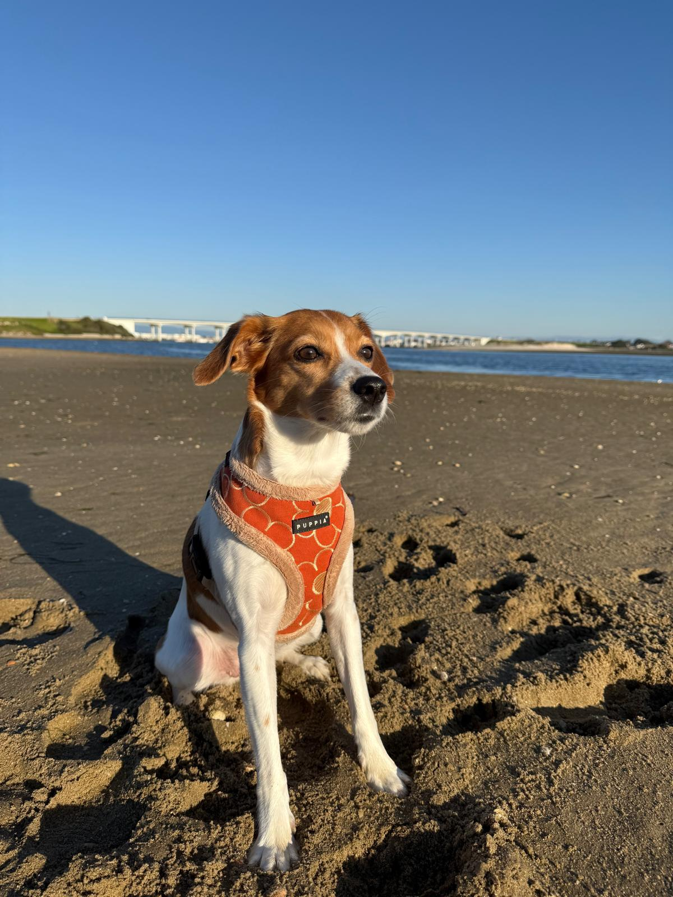
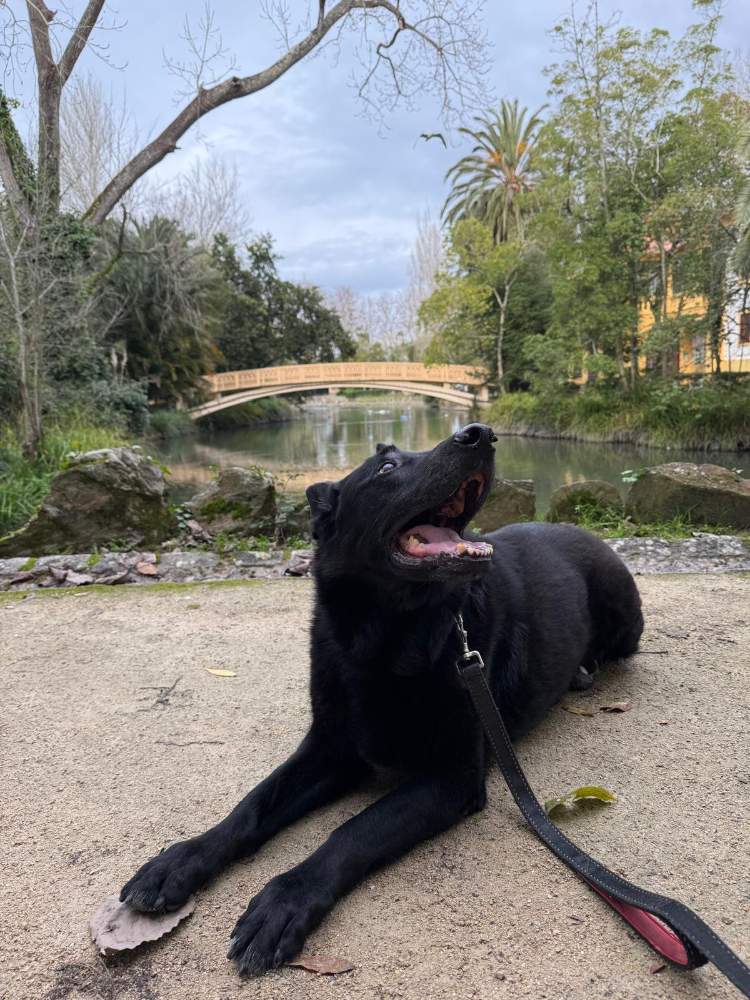
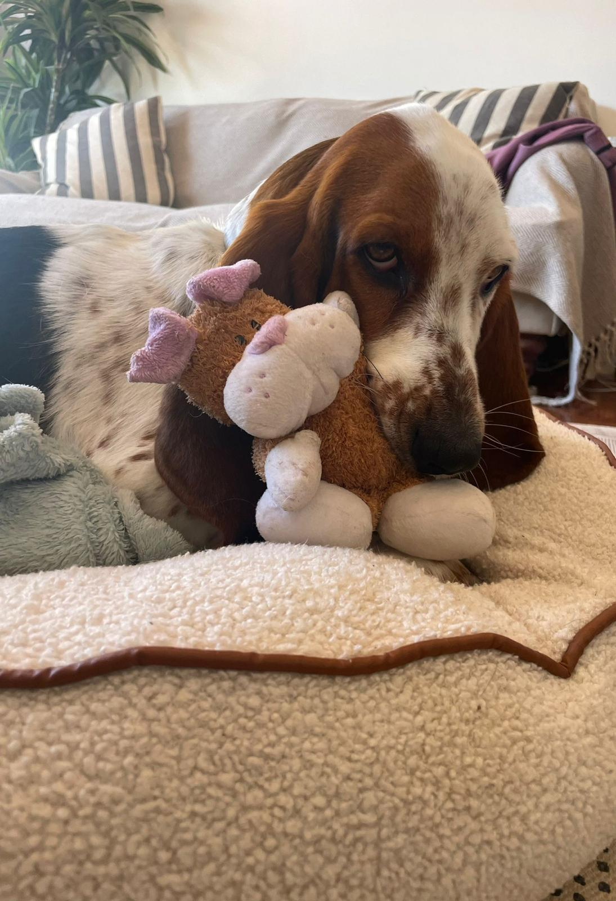
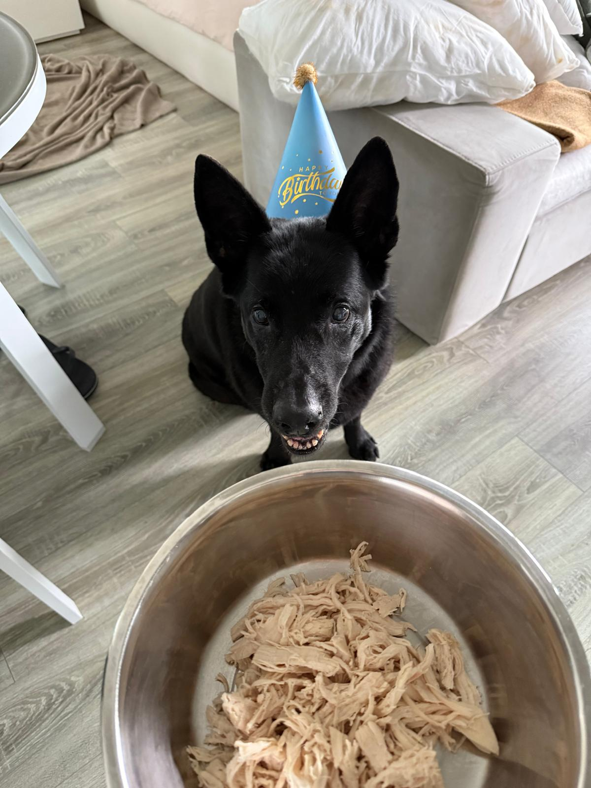
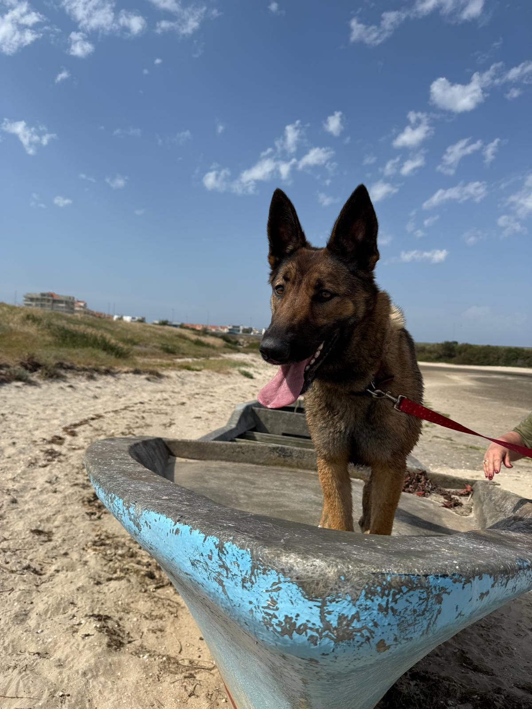
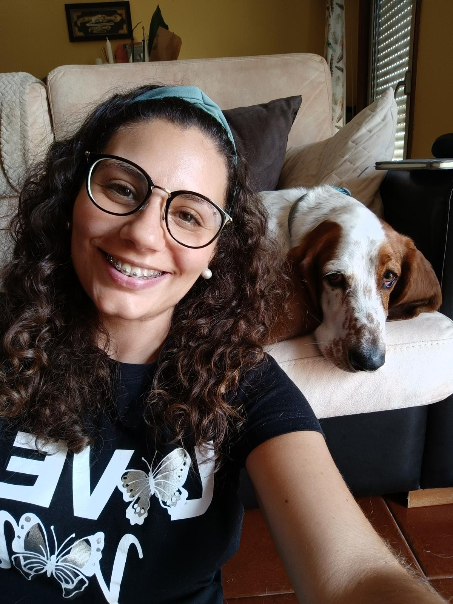
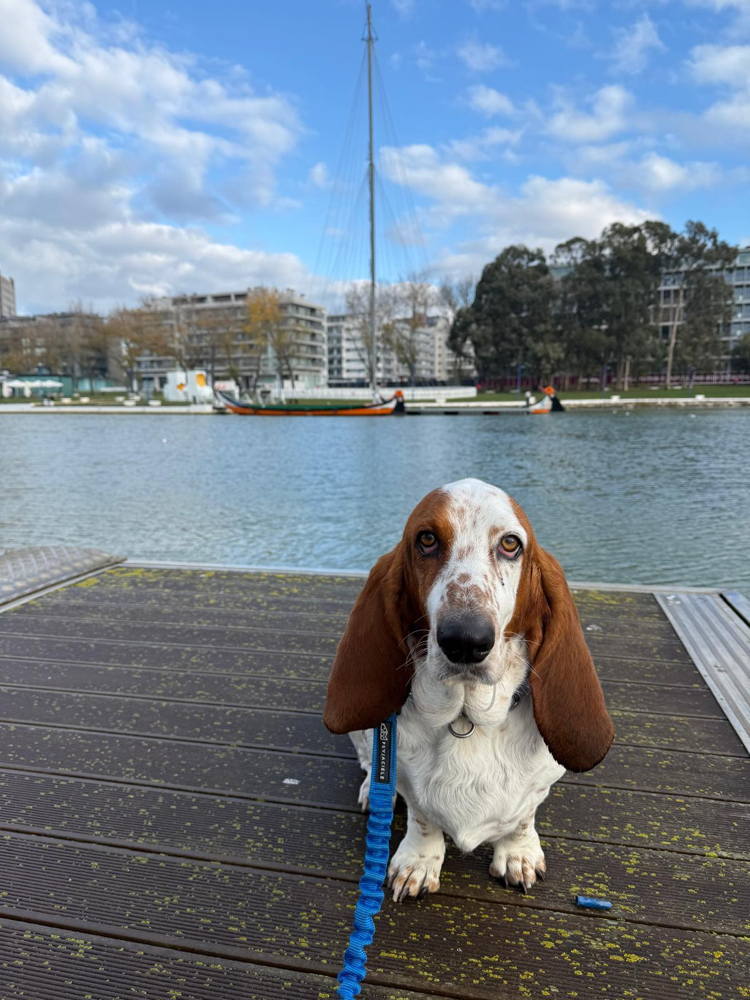
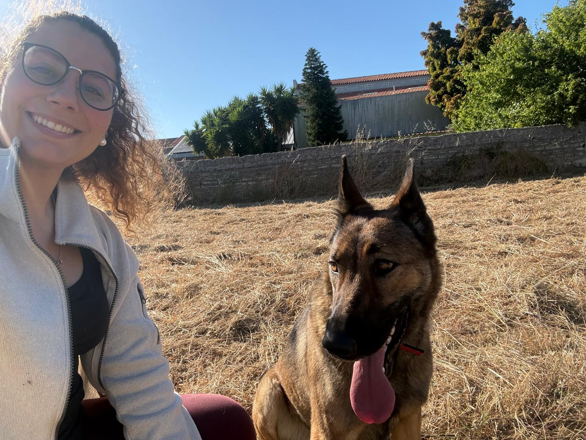

From reactors to repositories
I spent years elbow-deep in chemical processes before realizing what I actually loved was solving the puzzle, not the chemistry. So I taught myself to code - mostly out of stubbornness - and that curiosity became backend development.
I still work the same way: understand the "why" before the "how", and ship the imperfect solution today rather than the perfect one that never ships.
📍 Budapest - one of many cities on the list.

Constança, the real boss
By my side for 8 years - part stress relief, part unofficial supervisor of everything I do.
What drives me
-
Continuous learning
Every new tool is a puzzle worth solving. -
Practical problem-solving
Solutions that ship beat perfect theory. -
Adaptability
Four industries taught me to learn fast. -
Ownership
From requirements to deployment, start to finish.
Some fosters I've looked after along the way
Beyond my own dog, I've hosted family stays for other people's dogs and fostered a few along the way - feeding, walking, and looking after them like they were my own.






